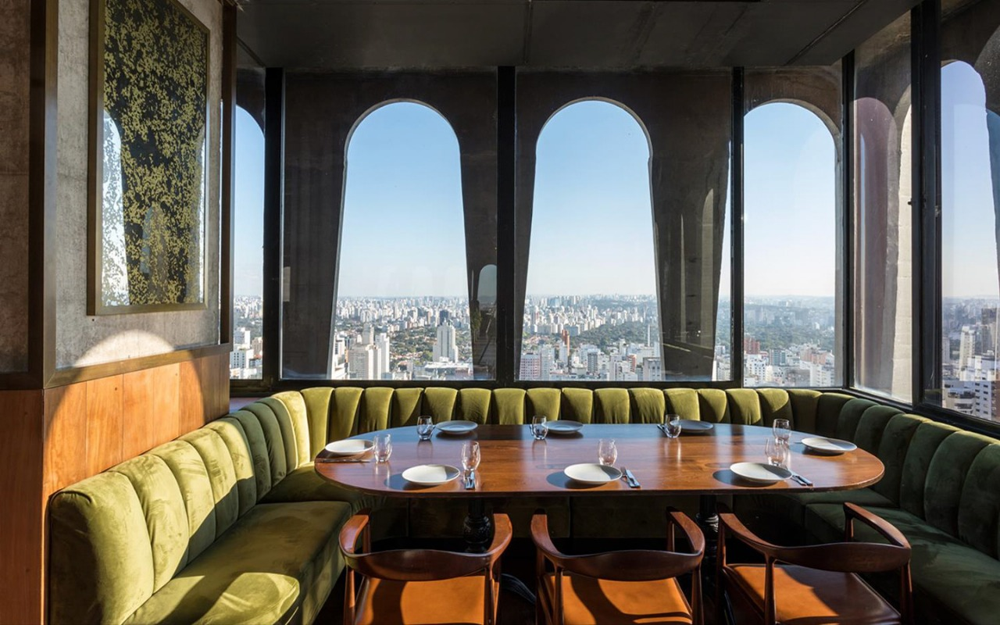

Seen Restaurante & Bar
Localizado no 23º andar do hotel Tivoli Mofarrej São Paulo, o Seen Restaurant & Bar é o hotspot mais badalado da cidade.
O Seen Restaurante & Bar é uma experiência gastronômica que une o melhor da alta cozinha com uma vista deslumbrante da cidade.
Com um menu que mistura sabores internacionais e brasileiros, o Seen oferece pratos refinados e coquetéis inovadores,
preparados por chefs e mixologistas renomados. O ambiente sofisticado, com uma decoração moderna e áreas ao ar livre,
é ideal para jantares requintados e noites especiais.
